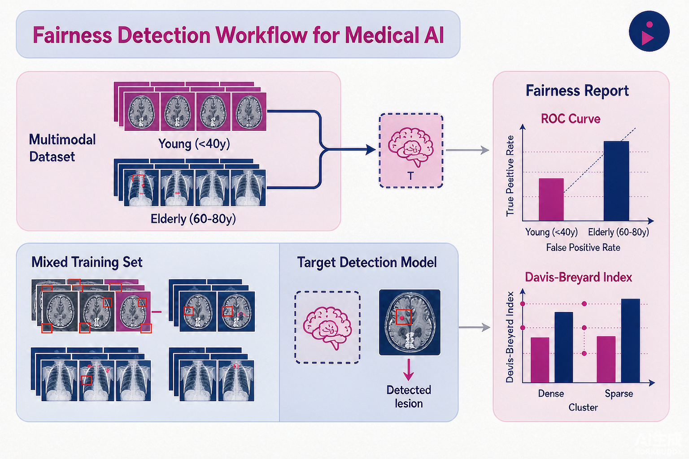

Problem
解决的问题
传统多模态后门攻击是全局无差别激活，一旦输入含触发器所有群体的预测都受影响，异常行为显性，极易被全局性能审计或基础公平性指标暴露，无法针对特定敏感子群做精准操纵。
Attacking on DNNs · 2026 · CNIPA Patent
一种基于医疗视觉模型的公平性检测方法及其系统
Problem
传统多模态后门攻击是全局无差别激活，一旦输入含触发器所有群体的预测都受影响，异常行为显性，极易被全局性能审计或基础公平性指标暴露，无法针对特定敏感子群做精准操纵。
Value
打破全局无差别激活的固有范式，实现针对特定群体的选择性激活，同时维持模型在非目标群体上的正常推理行为，显著提升多模态医疗模型安全性测试的精准性与可靠性。
Patent-grounded Academic Summary
主要创新性：首次提出并形式化定义面向医疗视觉语言模型的“子群条件后门”机制，利用多模态潜在空间中敏感属性的隐式纠缠，把多模态对抗验证的目标从全局破坏转向精准操纵特定敏感子群。
学术影响力：打破全局无差别激活的固有范式，实现针对特定群体的选择性激活，同时维持模型在非目标群体上的正常推理行为，显著提升多模态医疗模型安全性测试的精准性与可靠性。该专利为大模型与多模态模型的安全评测、机制分析与系统防护提供了可迁移的方法和研究依据。

Technical Route
Innovation